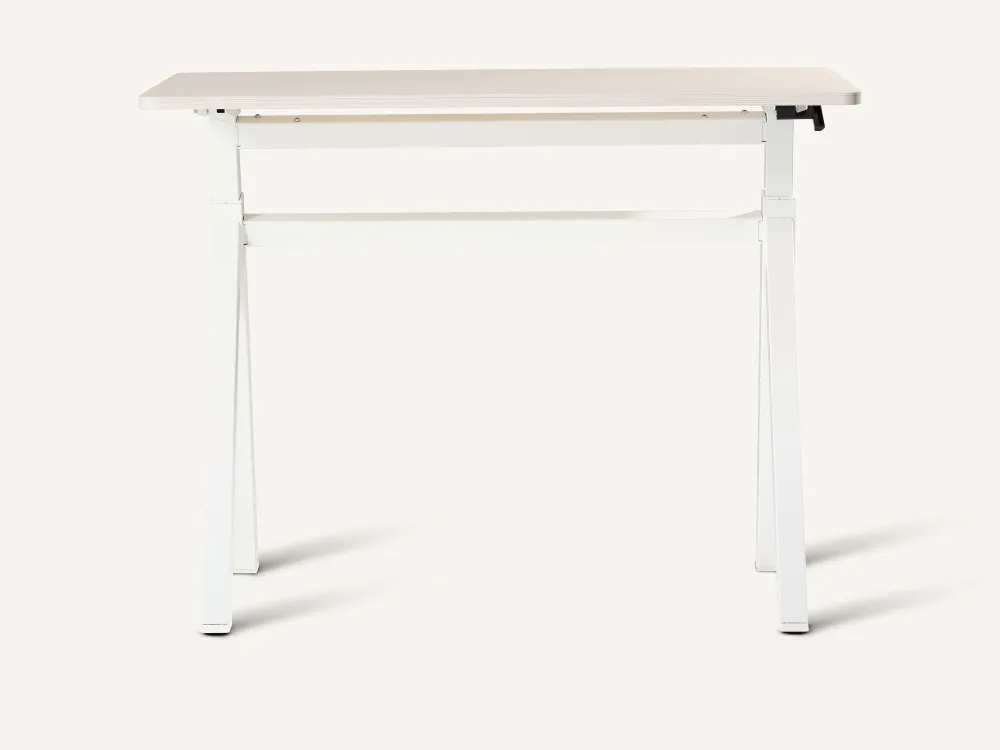
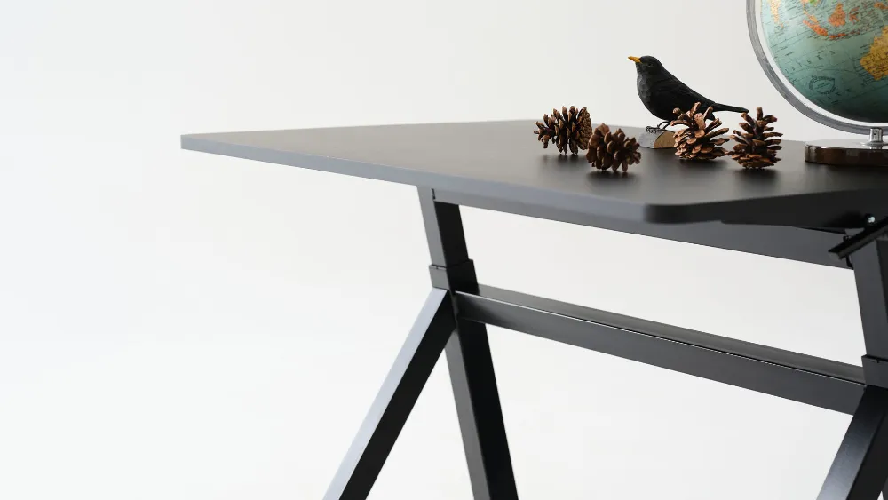
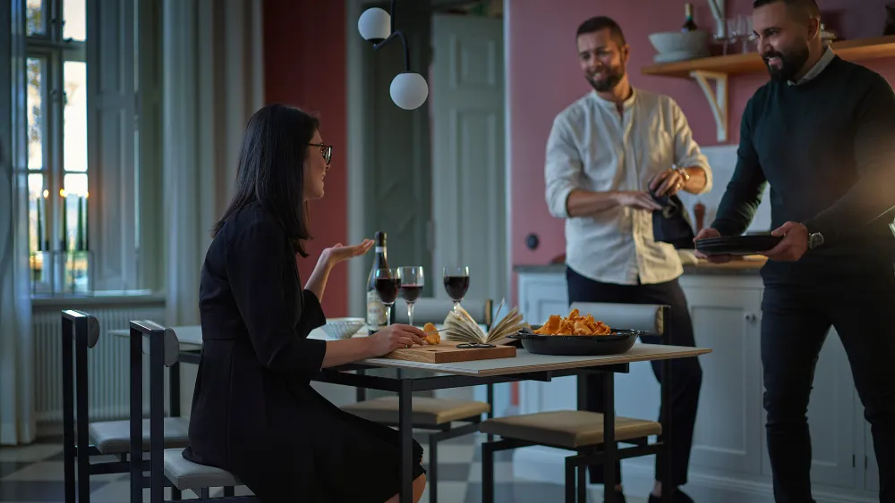

JOURNAL
Nya perspektiv.
Fler berättelser.
Läs vidare hos Starrike om produkter, idéer och livet runt möblerna.

6 AUGUSTI 2025Prenumerera på Ymer

17 JUNI 2024Ett skrivbord med växtkraft

RUM FÖR GEMENSKAP